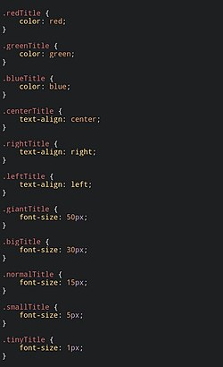
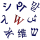

CSS
| Cascading Style Sheets (CSS) | |
|---|---|
 Example of CSS source code | |
| Filename extension |
.css |
| Internet media type |
text/css |
| Uniform Type Identifier (UTI) | public.css |
| Developed by | World Wide Web Consortium (W3C) |
| Initial release | 17 December 1996 |
| Latest release | CSS 3 is being developed as multiple separate modules. Regular snapshots summarize their status. 7 December 2023 |
| Type of format | Style sheet language |
| Container for | Style rules for HTML elements |
| Contained by | HTML Documents |
| Open format? | Yes |
| Website | w3 |


| Cascading Style Sheets |
|---|
| Concepts |
| Philosophies |
| Preprocessors |
| Frameworks |
| Extensions |
| Comparisons |

| HTML |
|---|
| HTML and variants |
| HTML elements and attributes |
| Editing |
| Character encodings and language |
| Document and browser technology |
| Client-side scripting and APIs |
| Web3D technology |
| Standardizations |
| Comparisons |

Cascading Style Sheets (CSS) is a style sheet language used for specifying the presentation and styling of a document written in a markup language, such as HTML or XML (including XML dialects such as SVG, MathML, or XHTML).[2] CSS is a cornerstone technology of the World Wide Web, alongside HTML and JavaScript.[3]
CSS is designed to enable the separation of content and presentation, including layout, colors, and fonts.[4] This separation can improve content accessibility, since the content can be written without concern for its presentation; provide more flexibility and control in the specification of presentation characteristics; enable multiple web pages to share formatting by specifying the relevant CSS in a separate .css file, which reduces complexity and repetition in the structural content; and enable the .css file to be cached to improve the page load speed between the pages that share the file and its formatting.
Separation of formatting and content also makes it feasible to present the same markup page in different styles for different rendering methods, such as on-screen, in print, by voice (via speech-based browser or screen reader), and on Braille-based tactile devices. CSS also has rules for alternative formatting if the content is accessed on a mobile device.[5]
The name cascading comes from the specified priority scheme to determine which declaration applies if more than one declaration of a property match a particular element. This cascading priority scheme is predictable.
The CSS specifications are maintained by the World Wide Web Consortium (W3C). Internet media type (MIME type) text/css is registered for use with CSS by RFC 2318 (March 1998). The W3C operates a free CSS validation service for CSS documents.[6]
In addition to HTML, other markup languages support the use of CSS including XHTML, plain XML, SVG, and XUL. CSS is also used in the GTK widget toolkit.
Syntax
[edit]CSS has a simple syntax and uses a number of English keywords to specify the names of various style properties.
Style sheet
[edit]A style sheet consists of a list of rules. Each rule or rule-set consists of one or more selectors, and a declaration block.
Selector
[edit]In CSS, selectors declare which part of the markup a style applies to by matching tags and attributes in the markup itself.
Selector types
[edit]Selectors may apply to the following:
- all elements of a specific type, e.g. the second-level headers h2
- elements specified by attribute, in particular:
- id: an identifier unique within the document, denoted in the selector language by a hash prefix e.g.
#id - class: an identifier that can annotate multiple elements in a document, denoted by a dot prefix e.g.
.classname(the phrase "CSS class", although sometimes used, is a misnomer, as element classes—specified with the HTML class attribute—is a markup feature that is distinct from browsers' CSS subsystems, and the related W3C/WHATWG standards work on document styles; see RDF and microformats for the origins of the "class" system of the Web content model)
- id: an identifier unique within the document, denoted in the selector language by a hash prefix e.g.
- elements depending on how they are placed relative to others in the document tree.
Classes and IDs are case-sensitive, start with letters, and can include alphanumeric characters, hyphens, and underscores. A class may apply to any number of instances of any element. An ID may only be applied to a single element.
Combinators
[edit]Multiple simple selectors may be joined using combinators to specify elements by location, element type, id, class, or any combination thereof.[8] The order of the selectors is important. For example, div .myClass {color: red;} applies to all elements of class myClass that are inside div elements, whereas .myClass div {color: red;} applies to all div elements that are inside elements of class myClass. This is not to be confused with concatenated identifiers such as div.myClass {color: red;} which applies to div elements of class myClass.
Summary of selector syntax
[edit]The following table provides a summary of selector syntax indicating usage and the version of CSS that introduced it.[9]
| Pattern | Matches | First defined in CSS level |
|---|---|---|
E | an element of type E | 1 |
E:link | an E element that is the source anchor of a hyperlink whose target is either not yet visited (:link) or already visited (:visited) | 1 |
E:visited | ||
E:active | an E element during certain user actions | 1 |
E:hover | 2 | |
E:focus | ||
E::first-line | the first formatted line of an E element | 1 |
E::first-letter | the first formatted letter of an E element | 1 |
.c | all elements with class="c" | 1 |
#myid | the element with id="myid" | 1 |
Declaration block
[edit]A declaration block consists of a pair of braces ({}) enclosing a semicolon-separated list of declarations.[10]
Declaration
[edit]Each declaration itself consists of a property, a colon (:), and a value. Optional white-space may be around the declaration block, declarations, colons, and semi-colons for readability.[11]
Properties
[edit]Properties are specified in the CSS standard. Each property has a set of possible values. Some properties can affect any type of element, and others apply only to particular groups of elements.[12][13]
Values
[edit]Values may be keywords, such as "center" or "inherit", or numerical values, such as 200px (200 pixels), 50vw (50 percent of the viewport width) or 80% (80 percent of the parent element's width).
Color values can be specified with keywords (e.g. "red"), hexadecimal values (e.g. #FF0000, also abbreviated as #F00), RGB values on a 0 to 255 scale (e.g. rgb(255, 0, 0)rgba(255, 0, 0, 0.8)), or HSL or HSLA values (e.g. hsl(0 100% 50%), hsl(0 100% 50% / 0.8)).[14]
Non-zero numeric values representing linear measures must include a length unit, which is either an alphabetic code or abbreviation, as in 200px or 50vw; or a percentage sign, as in 80%. Some units – cm (centimetre); in (inch); mm (millimetre); pc (pica); and pt (point) – are absolute, which means that the rendered dimension does not depend upon the structure of the page; others – em (em); ex (ex) and px (pixel)[clarification needed] – are relative, which means that factors such as the font size of a parent element can affect the rendered measurement. These eight units were a feature of CSS 1[15] and retained in all subsequent revisions. The proposed CSS Values and Units Module Level 3 will, if adopted as a W3C Recommendation, provide seven further length units: ch; Q; rem; vh; vmax; vmin; and vw.[16]
Specificity
[edit]Specificity refers to the relative weights of various rules.[18] It determines which styles apply to an element when more than one rule could apply. Based on the specification, a simple selector (e.g. H1) has a specificity of 1, class selectors have a specificity of 1,0, and ID selectors have a specificity of 1,0,0. Because the specificity values do not carry over as in the decimal system, commas are used to separate the "digits"[19] (a CSS rule having 11 elements and 11 classes would have a specificity of 11,11, not 121).
Thus the selectors of the following rule result in the indicated specificity:
| Selectors | Specificity |
|---|---|
h1 {color: white;} | 0, 0, 0, 1 |
p em {color: green;} | 0, 0, 0, 2 |
.grape {color: red;} | 0, 0, 1, 0 |
p.bright {color: blue;} | 0, 0, 1, 1 |
p.bright em.dark {color: yellow;} | 0, 0, 2, 2 |
#id218 {color: brown;} | 0, 1, 0, 0 |
style=" " | 1, 0, 0, 0 |
Examples
[edit]Consider this HTML fragment:
<!DOCTYPE html>
<html>
<head>
<meta charset="utf-8">
<style>
#xyz { color: blue; }
</style>
</head>
<body>
<p id="xyz" style="color: green;">To demonstrate specificity</p>
</body>
</html>
In the above example, the declaration in the style attribute overrides the one in the <style> element because it has a higher specificity, and thus, the paragraph appears green:
To demonstrate specificity
Limitations
[edit]Some noted limitations of the current capabilities of CSS include:
Cannot explicitly declare new scope independently of position
[edit]Scoping rules for properties such as z-index look for the closest parent element with a position: absolute or position: relative declaration. This odd coupling has undesired effects. For example, it is impossible to avoid declaring a new scope when one is forced to adjust an element's position, preventing one from using the desired scope of a parent element.
Pseudo-class dynamic behavior not controllable
[edit]CSS implements pseudo-classes that allow a degree of user feedback by conditional application of alternative styles. One CSS pseudo-class, ":hover", is dynamic (equivalent of JavaScript "onmouseover") and has potential for misuse (e.g., implementing cursor-proximity popups),[76] but CSS has no ability for a client to disable it (no "disable"-like property) or limit its effects (no "nochange"-like values for each property).
Cannot name rules
[edit]There is no way to name a CSS rule, which would allow (for example) client-side scripts to refer to the rule even if its selector changes.
Cannot include styles from a rule into another rule
[edit]CSS styles often must be duplicated in several rules to achieve the desired effect, causing additional maintenance and requiring more thorough testing. Some new CSS features were proposed to solve this but were abandoned afterward.[77][78] Instead, authors may gain this ability by using more sophisticated stylesheet languages which compile to CSS, such as Sass, Less, or Stylus.
Cannot target specific text without altering markup
[edit]Besides the ::first-letter pseudo-element, one cannot target specific ranges of text without needing to utilize placeholder elements.
See also
[edit]References
[edit]- ↑ "Minutes Telecon 2024-12-11". CSS WG Blog. W3C. 2024-12-12. Archived from the original on 2025-01-16. Retrieved 2025-01-16.
- ↑ "CSS developer guide". MDN Web Docs. Archived from the original on 2015-09-25. Retrieved 2026-04-20.
- ↑ Flanagan, David (18 April 2011). JavaScript: the definitive guide. Beijing; Farnham: O'Reilly. p. 1. ISBN 978-1-4493-9385-4. OCLC 686709345.
JavaScript is part of the triad of technologies that all Web developers must learn: HTML to specify the content of web pages, CSS to specify the presentation of web pages, and JavaScript to specify the behavior of web pages.
- ↑ "What is CSS?". World Wide Web Consortium. Archived from the original on 2010-11-29. Retrieved 2010-12-01.
- ↑ Clark, Scott (23 July 2010). "Web-based Mobile Apps of the Future Using HTML 5, CSS and JavaScript". HTML Goodies. HTMLGoodies. Archived from the original on 2014-10-20. Retrieved 2014-10-16.
- ↑ "W3C CSS validation service". Archived from the original on 2011-02-14. Retrieved 2012-06-30.
- ↑ "W3C CSS2.1 specification for pseudo-elements and pseudo-classes". World Wide Web Consortium. 7 June 2011. Archived from the original on 30 April 2012. Retrieved 30 April 2012.
- ↑ "Selectors". Cascading Style Sheets Level 2 Revision 1 (CSS 2.1) Specification. W3C. Archived from the original on 2006-04-23.
- ↑ "Selectors Level 3". W3C. Archived from the original on 2014-06-03. Retrieved 2014-05-30.
- ↑ "CSS Syntax Module Level 3". W3C. Archived from the original on 1 October 2023. Retrieved 1 October 2023.
- ↑ "W3C CSS2.1 specification for rule sets, declaration blocks, and selectors". World Wide Web Consortium. 7 June 2011. Archived from the original on 28 March 2008. Retrieved 2009-06-20.
- ↑ "Full property table". W3C. Archived from the original on 2014-05-30. Retrieved 2014-05-30.
- ↑ "Index of CSS properties". W3C. Retrieved 2020-08-09.
- ↑ "CSS Color". MDN Web Docs. 2024-04-05. Archived from the original on 2024-03-27. Retrieved 2024-04-05.
- ↑ "6.1 Length units". Cascading Style Sheets, level 1. 17 December 1996. Archived from the original on 14 June 2019. Retrieved 20 June 2019.
External links
[edit]
Definitions from Wiktionary Media from Commons
Media from Commons- Textbooks from Wikibooks
- Resources from Wikiversity
- Data from Wikidata
- Discussions from Meta-Wiki
- Documentation from MediaWiki